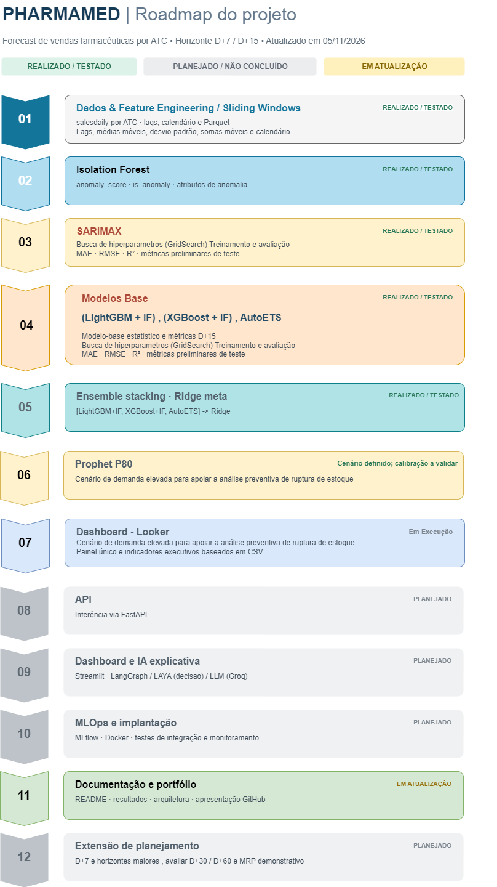
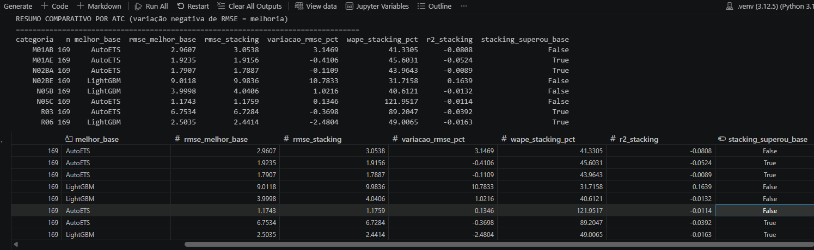

Projeto de portfólio em desenvolvimento · Machine Learning · Séries temporais · Detecção de anomalias · Ensemble Learning · Business Intelligence (planejado)
O PharmaDemand (PharmaMed) é um projeto de previsão de vendas diárias no varejo farmacêutico com dados agrupados por categorias ATC. O horizonte atualmente priorizado é D+15 (previsão do valor diário exatamente 15 dias após a origem), com estudos anteriores em D+7.
A solução utiliza LightGBM, XGBoost e AutoETS como modelos-base e Ridge Regression como metamodelo (stacking). O SARIMAX permanece independente, como benchmark estatístico, enquanto o Prophet P80 é previsto para a análise de cenários conservadores de demanda. O projeto não pressupõe que o stacking seja superior ao melhor modelo individual, apesar que em todas as situações não ocorreu isto ele perdeu para o melhor modelo por muito pouco.
O trabalho está dividido em duas frentes: (1) engenharia temporal, modelagem, treinamento e avaliação e (2) disponibilização das previsões, visualização executiva, monitoramento e MLOps. O primeiro bloco possui experimentos executados; a operacionalização do segundo ainda está no roadmap.
Estado de referência (30/10/2026): stacking global D+15 com três modelos-base já experimentado e comparado no holdout; LightGBM apresentou o menor RMSE global nos resultados disponíveis. Documentação, exportação CSV e dashboard executivo no Looker Studio são as próximas entregas; não há alegação de implantação corporativa ou integração já concluída com Databricks.

1. Problema de negócio#
Estimar a demanda de curto prazo pode apoiar estudos de:
- planejamento de reposição e avaliação de cenários de estoque;
- identificação de variações e comportamentos atípicos da demanda;
- comparação entre métodos estatísticos, ML e stacking;
- comunicação dos resultados por indicadores executivos e diagnósticos técnicos;
- monitoramento de erros, viés e eventuais desvios de comportamento dos modelos.
A fonte é o conjunto público Pharma Sales Data, especialmente a tabela salesdaily, com séries diárias por categoria ATC. É uma base histórica de vendas, não um sistema completo de estoque, compras ou abastecimento. Por isso, o projeto não reivindica redução comprovada de rupturas, economia financeira ou validação operacional em ambiente industrial.
2. Objetivos e escopo atual#
| Item | Definição |
|---|---|
| Granularidade de origem | Diária, com identificação da categoria ATC |
| Abrangência | Treinamento global com as oito categorias ATC disponíveis no experimento: M01AB, M01AE, N02BA, N02BE, N05B, N05C, R03 e R06 |
| Base do MVP | salesdaily e features derivadas |
| Horizonte principal atual | D+15; D+7 permanece como estudo separado |
| Alvo | quantity: vendas/quantidade diária por categoria na data-alvo |
| Modelos-base do stacking | LightGBM + XGBoost + AutoETS |
| Metamodelo | Ridge Regression sobre as três previsões-base, com categoria como informação adicional de ajuste |
| Fora do stacking | SARIMAX: benchmark estatístico independente; Prophet P80: cenário conservador, sujeito a validação de cobertura |
| Anomalias | Isolation Forest e seus indicadores, na engenharia de features e na análise, quando compatíveis com o protocolo temporal |
| Avaliação | MAE, RMSE, R², WAPE, Bias, quantidade de previsões e, para P80, cobertura empírica |
| Visualização planejada | Uma Visão Executiva no Looker Studio, a partir de CSV |
| Integração futura | Databricks, FastAPI, observabilidade e alertas automatizados |
Decisão de simplificação: o Ridge Base foi retirado. O único Ridge da arquitetura principal é o metamodelo. A exclusão do quarto modelo-base praticamente não mudou o RMSE global do stacking nos testes disponíveis, reduzindo custo de manutenção e complexidade operacional.
2.1. Por que manter todas as categorias em um único treinamento?#
A escolha por treinamento global é deliberada, não um ajuste cosmético do dashboard:
- Amostragem e variabilidade: nos experimentos por categoria, algumas séries apresentaram poucas observações úteis e/ou baixa variabilidade; modelos isolados tiveram dificuldade de generalizar e chegaram a produzir R² negativo.
- Maior base de aprendizagem: reunir as categorias permite que LightGBM e XGBoost aprendam padrões temporais comuns em um conjunto mais amplo, em vez de ajustar vários modelos com menos dados cada.
- Menor risco de sobreajuste local e menor manutenção: um treinamento global simplifica tuning, controle de versões, validação, inferência e atualização do pipeline.
- Padronização da comparação: os três modelos-base e o metamodelo podem ser comparados no mesmo holdout, mantendo as oito categorias no mesmo processo.
- Arquitetura extensível: o identificador da categoria permanece nos dados; futuramente é possível testar interações, efeitos específicos ou segmentações sem abandonar o pipeline global.
Limitação importante: treinamento global não garante melhor desempenho em todas as ATCs. Padrões heterogêneos podem ser mascarados pelas métricas agregadas. Portanto, a Visão Executiva exibirá indicadores consolidados, mas a avaliação técnica continuará calculando os erros por categoria, mesmo que não seja necessário publicar uma página adicional no Looker. O identificador ATC deverá permanecer no CSV para auditoria e investigação.
3. Arquitetura atual e justificativas dos modelos#
Ver código Mermaid original
flowchart TD
A["salesdaily / todas as categorias ATC"] --> B["Engenharia temporal e preparação por origem"]
B --> L["LightGBM"]
B --> X["XGBoost"]
B --> E["AutoETS / histórico temporal"]
L --> O["Previsões OOF temporais em memória"]
X --> O
E --> O
O --> M["Ridge Meta — stacking global D+15"]
M --> H["Avaliação no holdout cronológico"]
L --> H
X --> H
E --> H
H --> P["Comparação, previsões e métricas"]
B --> S["SARIMAX — benchmark independente"]
B --> Q["Prophet P80 — cenário conservador"]
S --> P
Q --> P
P --> C["CSV consolidado — planejado"]
C --> D["Looker Studio — Visão Executiva planejada"]
Nota sobre o diagrama: o SARIMAX e o Prophet P80 não participam do essemble e nem fornecem entradas ao Ridge Meta. A preparação de histórico necessária ao AutoETS é diferente da matriz tabular dos modelos de boosting. O fluxo do Prophet P80 é uma extensão de comparação/planejamento, não uma etapa já validada no mesmo holdout.
3.1. Papel e escolha dos três modelos-base#
| Modelo | Por que foi escolhido | Pontos fortes | Limitações a monitorar |
|---|---|---|---|
| LightGBM | Bom desempenho no experimento global; referência atual (champion) | Aprende relações não lineares, interações e efeitos de lags/estatísticas móveis com boa eficiência | Depende de engenharia correta de features; pode degradar com mudanças de regime e vazamento temporal |
| XGBoost | Alternativa de gradient boosting para observar erros complementares aos do LightGBM | Flexível, robusto a interações não lineares, permite regularização | Pode produzir erros altamente correlacionados aos do LightGBM e acrescentar pouco ao ensemble |
| AutoETS | Introduz uma família estatística diferente dos dois modelos de árvores | Captura componentes de nível, tendência e sazonalidade por série, com menos dependência de features tabulares | Pode responder pior a mudanças abruptas, anomalias e padrões exógenos; exige atualização correta do histórico disponível na origem |
A composição busca diversidade de hipóteses, não apenas a inclusão de algoritmos populares. LightGBM e XGBoost compartilham a família de boosting, mas podem divergir em regularização e erros; AutoETS fornece uma referência estatística estruturalmente distinta. Essa complementaridade é uma hipótese a validar, pois diversidade teórica não implica necessariamente ganho de RMSE.
Isolation Forest: permanece como componente de detecção e análise de anomalias. Caso anomaly_score ou is_anomaly respeita o corte temporal de cada previsão; a compatibilidade do pré-processamento existente ainda exige auditoria antes de uso operacional. Por enquanto existe uma "percepcao" que as features do Isolation Forest estão sendo usados. Mas um estudo mais robusto usando SHAP (Summary Plot e Dependence Plot) , avaliando justamente o uso da feature esta sendo avaliado.
3.2. Por que Ridge Regression como metamodelo?#
O Ridge Meta recebe, para cada origem e categoria, as previsões pred_lightgbm, pred_xgboost e pred_autoets. A implementação atual também considera category para permitir ajustes de intercepto por categoria. Os coeficientes são aprendidos a partir de previsões OOF (out-of-fold) temporais, e não diretamente sobre previsões geradas no próprio conjunto de ajuste dos modelos-base.
O objetivo é aprender uma combinação linear regularizada que reduza o erro fora da amostra. A penalização L2 ajuda a estabilizar os coeficientes quando LightGBM e XGBoost produzem previsões correlacionadas. A escolha favorece um metamodelo relativamente simples, transparente e menos flexível do que uma árvore de decisão.
3.3. Comparação técnica: Ridge Meta × árvore de decisão como metamodelo#
| Critério | Ridge Regression (escolhido) | Decision Tree Regressor (alternativa) |
|---|---|---|
| Combinação das previsões | Linear, com regularização L2 | Não linear, dividida em regras/folhas |
| Complexidade | Baixa; poucos coeficientes para três entradas | Dependente da profundidade e do número de folhas |
| Dados OOF limitados | Tende a ser mais estável quando há poucos exemplos e previsores correlacionados | Maior risco de ajustar ruído ou particularidades dos folds |
| Interações e mudanças de regime | Não captura interações complexas sem features adicionais | Pode modelar regras condicionais, limiares e combinações locais |
| Interpretabilidade | Coeficientes e interceptos fáceis de inspecionar, com cautela sobre colinearidade | Regras legíveis se a árvore for pequena; complexas se crescer |
| Comportamento fora das faixas observadas | Extrapolação linear é possível, mas pode ser inadequada | Previsões tipicamente constantes por folha, sem extrapolação natural |
| Sensibilidade | Coeficientes afetados por regularização, escala e correlação | Divisões e resultados podem variar com pequenas mudanças nos dados |
| Motivo da decisão | Simplicidade, regularização e facilidade de auditar em um MVP | Manter como hipótese para experimento posterior, sem alegar que foi superada em testes ainda não executados |
3.4. Modelos externos ao stacking#
| Modelo | Finalidade | Como avaliar |
|---|---|---|
| SARIMAX | Benchmark estatístico independente; alerta se um modelo complexo ficar abaixo de uma referência mais simples | Comparar MAE, RMSE, R² e WAPE nas mesmas origens/datas; resultados de experimentos com cortes diferentes não formam ranking justo |
| Prophet P80 | Cenário de quantil superior da demanda para análise conservadora de planejamento | Verificar cobertura empírica (fração de realizações ≤ P80), excesso de previsão e potencial subprevisão; não julgar o P80 apenas pelo RMSE de modelos pontuais |
O P80 não significa acrescentar 20% à previsão. Ele representa o percentil 80 da distribuição preditiva estimada, sujeito a calibração.
4. Preparação dos dados#
A camada de engenharia de atributos considera:
- Calendário: dia da semana, mês, fim de semana e demais indicadores disponíveis;
- Defasagens: lags construídos exclusivamente com observações conhecidas na origem da previsão;
- Janelas móveis: médias, somas e dispersões em janelas como 7, 15 e 30 dias;
- Categoria ATC: identificador mantido para modelagem, avaliação e rastreabilidade;
- Detecção de anomalias: indicadores do Isolation Forest, quando efetivamente disponíveis sem olhar o futuro;
- Persistência de dados de entrada: arquivos Parquet para dados e features processados; modelos serializados como artefatos de inferência.
Durante a inferência, as previsões dos modelos-base e do Ridge Meta são geradas em memória; não se cria um arquivo de previsões por solicitação da futura API. A exportação CSV será uma etapa deliberada de reporting, não uma dependência para executar o ensemble.
5. Validação, metodologia e resultados#
5.1. Procedimento de avaliação D+15#
- Separar treino e holdout cronológico, tendo como referência os últimos seis meses para avaliação.
- Preservar todas as categorias em cada corte e verificar o horizonte D+15, a origem da previsão e a data-alvo.
- Ajustar cópias temporárias dos modelos-base nos folds históricos, usando somente dados disponíveis até cada origem; reutilizar hiperparâmetros selecionados sem repetir toda a busca dos modelos-base.
- Gerar previsões OOF de LightGBM, XGBoost e AutoETS e treinar o Ridge Meta apenas com essas previsões e a categoria ATC.
- Aplicar validação temporal e embargo adequado ao horizonte na seleção de hiperparâmetros do metamodelo; manter o holdout fora do ajuste.
- Usar os modelos-base finais salvos e o metamodelo treinado para prever o mesmo holdout, comparando MAE, RMSE, R², WAPE e Bias, globalmente e por categoria.
- Para SARIMAX e Prophet P80, só acrescentar comparações quantitativas quando as previsões estiverem alinhadas às mesmas origens e datas-alvo e aos mesmos dados disponíveis.
5.2. Resultados disponíveis do experimento global D+15#
Na comparação dos modelos-base, o LightGBM foi o melhor modelo pontual em RMSE global. Os resultados do stacking com três entradas, enviados no CSV do experimento, permitem reconstruir seu RMSE global a partir dos RMSEs por categoria e seus respectivos tamanhos de amostra.
| Modelo | Papel | RMSE global ↓ | Observação |
|---|---|---|---|
| LightGBM | Modelo pontual principal (champion) | 4,5812 | Menor RMSE entre os modelos comparados |
| XGBoost | Modelo-base alternativo | 4,6795 | Desempenho próximo ao LightGBM |
| AutoETS | Modelo-base estatístico | 5,0912 | Contribui com abordagem diferente |
| Stacking — 3 modelos + Ridge Meta | Challenger | ≈ 4,8063 | RMSE reconstruído a partir de 8 categorias × 169 observações |
| Stacking anterior — 4 modelos + Ridge Meta | Experimento de ablação anterior | ≈ 4,8054 | Diferença muito pequena em relação ao stacking de 3 modelos |
Leitura correta: a remoção do Ridge Base praticamente não alterou o RMSE global (diferença aproximada de 0,02% entre as duas variantes do stacking). Portanto, manter três modelos-base reduz complexidade sem perda global relevante demonstrada. Entretanto, o stacking ainda não supera o LightGBM no RMSE observado; não deve ser anunciado como vencedor do experimento.
As oito categorias do CSV somam 1.352 observações no holdout. O resultado global não elimina diferenças locais: o desempenho por ATC continua parte da auditoria técnica, inclusive onde R² é negativo ou WAPE é elevado. Ao agregar séries de escalas diferentes, R² e RMSE globais podem dar uma impressão mais favorável que a avaliação por categoria.
Métricas e agregação: para reproduzir o RMSE global a partir das categorias, utiliza-se a raiz da média ponderada dos RMSE², com pesos proporcionais a n; não a média simples dos RMSEs. O WAPE global deve ser calculado por 100 × soma(|erro|) / soma(|real|), e não pela média dos WAPEs por categoria. MAE, Bias e R² do stacking de três entradas devem ser obtidos diretamente da execução correspondente, sem copiar valores do stacking antigo.

Imagem histórica preservada:
docs/Resultados.pngnão foi alterada. Se ela contiver o ranking anterior, deve ser atualizada localmente antes da publicação. Resultados antigos de D+7, cortes de treino diferentes ou testes não alinhados não são comparáveis diretamente à tabela D+15 acima.
5.3. Critérios para promover um modelo#
O LightGBM permanece como champion com base no menor RMSE global observado. O Stacking Ridge Meta permanece como challenger. Antes de promover um modelo, avaliar simultaneamente: desempenho em múltiplas janelas temporais, estabilidade por categoria, Bias, WAPE, previsões negativas e custo de manutenção. A preferência por arquitetura mais complexa não substitui evidência fora da amostra.
6. Roadmap de execução#
| Etapa | Status em 06/11/2026 | Entrega/observação |
|---|---|---|
| Dados e engenharia temporal | ✅ Experimentado | Dados processados, features e Parquet |
| Isolation Forest | ✅ Experimentado | Scores e flags de anomalias; revisar prevenção de leakage |
| LightGBM | ✅ Experimentado | Modelo-base e métricas D+15 |
| XGBoost | ✅ Experimentado | Modelo-base e métricas D+15 |
| AutoETS | ✅ Experimentado | Modelo-base estatístico e métricas D+15 |
| Stacking global D+15 + Ridge Meta | ✅ Experimentado | Três entradas, OOF temporal em memória e comparação no holdout |
| SARIMAX | ✅ Experimentado isoladamente | Benchmark externo; alinhar holdout para comparação definitiva |
| Prophet P80 | 🟡 Planejado/estudo | Validar quantil e cobertura para análise conservadora |
| Exportação CSV consolidado | ⬜ Próxima etapa | Dados de previsão e métricas para BI |
| Looker Studio — Visão Executiva | ⬜ Próxima etapa | Painel único e indicadores executivos baseados em CSV |
| Insights dinâmicos | ⬜ Planejado | Regras auditáveis sobre erros, desvios e cobertura |
| FastAPI | ⬜ Planejado | Inferência sob demanda e versionamento |
| MLflow, Docker e observabilidade | ⬜ Planejado | Reprodutibilidade e monitoramento técnico |
| Databricks | ⬜ Fase posterior | Ingestão e análise depois de concluir o painel em CSV |
| LangGraph / LAYA / Groq / RAG | ⬜ Fase posterior | Camada de explicações e análise assistida |
| Documentação | 🟡 Em atualização | README, diagramas, resultados e portfólio |
| D+7 e horizontes maiores | 🟡 Estudos separados / futuros | Não reutilizar artefatos D+15 em horizontes incompatíveis |
✅ indica experimentação documentada, não implantação em produção. A arquitetura, o pré-processamento, os artefatos de inferência e o protocolo temporal ainda precisam ser verificados em conjunto antes de uma operação real.
6.1. Visão Executiva planejada (Looker Studio)#
A ideia é manter uma única página, com todas as ATCs consolidadas, e o seguinte conteúdo:
- KPIs: demanda prevista D+15, RMSE do champion, WAPE global, R² global e, quando validada, cobertura real do Prophet P80;
- Série temporal: vendas observadas versus previsão principal, com séries opcionais de Stacking, SARIMAX e P80;
- Comparação de modelos: métricas no mesmo período e identificação explícita do modelo principal;
- Insights dinâmicos: alertas derivados de regras configuráveis (por exemplo, piora de RMSE, Bias fora do limite, cobertura P80 insuficiente);
- Rastreabilidade: período, categoria, data de execução, horizonte, versão/modelo e origem das previsões.
A visão pode ser agregada, mas o CSV deve preservar as linhas de categoria × origem × data-alvo, evitando perder a capacidade de investigar erros específicos. Para o reporting, um CSV tabular pode conter forecast_origin, date, category, horizon_days, quantity, pred_lightgbm, pred_xgboost, pred_autoets, pred_stacking, pred_sarimax, pred_prophet_p80 e campos de versão e execução. Dados externos ainda não implementados devem ficar ausentes/nulos, nunca preenchidos com previsões inventadas.
D+15 diário ≠ soma de vendas dos próximos 15 dias. Caso se deseje um KPI de demanda acumulada para abastecimento, será necessário gerar/validar todos os dias do horizonte e somar previsões apropriadas, sem multiplicar simplesmente a previsão D+15.
7. Organização sugerida do repositório#
A estrutura abaixo ainda esta sendo construida as pastas abaixo já existe, poré novas pastas como (especificas para documentacao via MKDocs devem ser gerada).
PharmaDemand/
├── README.md
├── data/
│ ├── raw/ # Dataset original, quando permitido
│ ├── features/ # Parquet de features e séries por horizonte
│ └── exports/ # CSV consolidado para BI (planejado)
├── notebooks/ # EDA, modelos, backtests, stacking e reporting
├── src/
│ ├── features/ # Engenharia temporal e anomalias
│ ├── models/ # LightGBM, XGBoost, AutoETS, SARIMAX, Prophet
│ ├── ensemble/ # OOF temporal e Ridge Meta
│ └── evaluation/ # Métricas globais e diagnósticos por ATC
├── models/ # Artefatos de modelos e versionamento
├── docs/
│ ├── Roadmap.png
│ └── Resultados.png
├── tests/ # Testes e verificações temporais (planejado)
└── requirements.txt # Dependências do projeto
8. Tecnologias e estado de uso#
Utilizadas nos experimentos: Python, Pandas, NumPy, scikit-learn, LightGBM, XGBoost, AutoETS/StatsForecast, SARIMAX/statsmodels, Isolation Forest, Parquet, Jupyter e avaliação temporal.
Arquitetura de análise consolidada: três modelos-base, Ridge Meta global D+15, holdout, comparação por categoria e benchmarks estatísticos independentes.
Em estudo/planejadas: Prophet P80 calibrado, CSV de reporting, Looker Studio, insights automáticos, FastAPI, MLflow, Docker, Databricks, LangGraph, LAYA, Groq e RAG. Esses itens não devem ser descritos como integrações concluídas antes de implementação e validação.
A escolha atual é CSV → Looker Studio antes de Databricks, evitando aumentar o escopo do MVP prematuramente.
9. Limitações e próximos cuidados#
- Dataset público de vendas; não representa um ERP ou uma cadeia real de suprimentos.
Dataset: Kaggle — Pharma Sales Data.